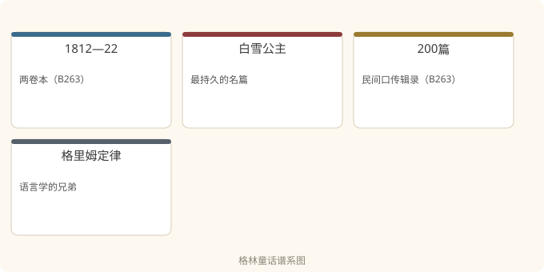

格林童话
一、基本信息
| 作者 | 格林兄弟 |
|---|---|
| 成书/出版 | 1812—1822年出版（Britannica：Kinder- und Hausmärchen (1812–22)） Brothers Grimm — Encyclopaedia Britannica（百科全书） |
| 国别/地区 | 德国 |
| 时代 | 近代 · 19世纪 |
| 体裁 | 童话集 |
| 语言 | 德语 |

格林童话谱系图（主题·结构图）
二、创作背景
Britannica（B263）：'the 200 stories of this collection (including, among the most enduring, Snow White, Little Red Riding Hood, Sleeping Beauty, and Rumpelstiltskin)'——白雪公主、小红帽、睡美人、侏儒怪等200篇。
语言学的另一面（B263）：雅各布以'Grimm's law'（'first sound shift'）论证辅音对应规律——历史语言学的里程碑。
三、内容脉络
名篇谱系（B263）：《白雪公主》《小红帽》《睡美人》《侏儒怪》等200篇（通说篇目）。
从口头采集到书面定型——版本史中的净化与增删（通说待核）。
四、主要人物表
| 人物 | 身份 | 说明 |
|---|---|---|
| 白雪公主/灰姑娘 | 童话 heroine | 最持久的形象（B263 语境） |
五、主题与艺术特点
- 民俗采集与民族文化建构（通说）。
- 童话的暴力与净化史（通说待核）。
- 语言学的副产品（B263：Grimm's law）。
六、影响与评论
- Britannica：200篇故事集——含最持久的白雪公主等（B263）。
Brothers Grimm — Encyclopaedia Britannica（百科全书） - Britannica：格里姆定律——历史语言学里程碑（B263）。
Brothers Grimm — Encyclopaedia Britannica（百科全书）
七、阅读建议
难点
- 版本差异（初版残酷、后版净化）。
- 德语方言地名。
- 《格林童话全集》（人民文学出版社魏以新译本等，通说待核）。
- 德文原版（公有领域）。
与《安徒生童话》对读：采集童话 vs 文学童话。
八、待核实
- 初版86篇/第七版211篇说核对。
- 《儿童与家庭童话》书名的双义（儿童/家庭）待核。
- 兄弟分工史待核。
本页主要来源
格林兄弟的其他收录作品：格林童话